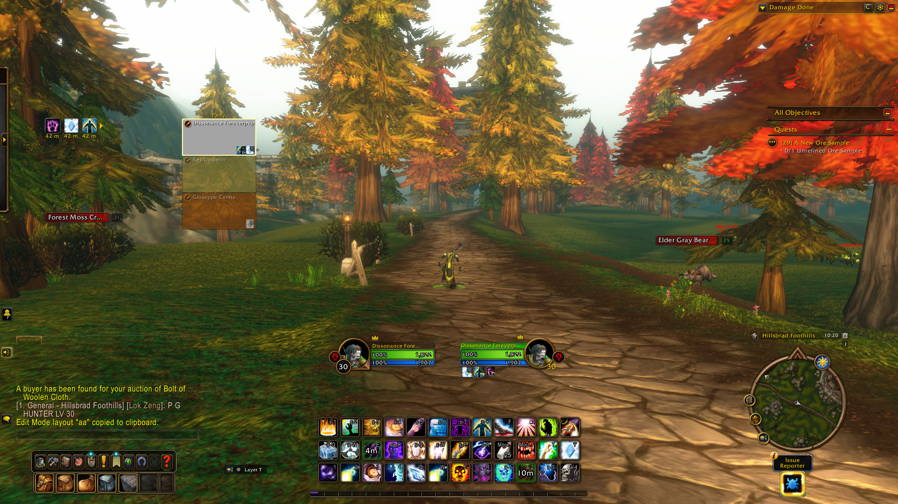
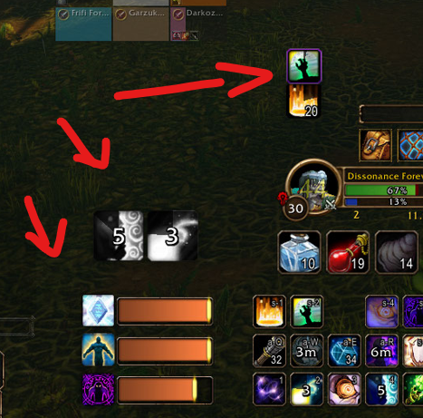

Stufen-Fahrplan (Wann du was tun musst)
Die chronologische Checkliste von Stufe 1 bis 60 für alle Klassen.
Startgebiet & Erste Berufe
- Gruppe bilden: Direkt mit Spielern in deiner Nähe gruppieren, um Mob-Kill-Aufgaben zu teilen.
- Kochen lernen (Stufe 1): Sobald du bei den ersten Händlern bist, Kochen lernen. Fleisch von Ebern/Wölfen nicht verkaufen, sondern braten → +5% Kill-XP Buff aktivieren!
- Bank-Alt erstellen: Vorab oder kurz ausloggen und einen Level-1-Charakter in Orgrimmar/Donnerfels zwischen Bank, Briefkasten und AH parken.
Der Zauberstab-Powerspike für Caster (Priester, Hexer, Magier)
Für Caster ist das der wichtigste Moment des gesamten Frühspiels:
- Eigenbau via Verzauberkunst (Skill 10): Grüne Items aus Quests entzaubern → Seltsamer Staub & Geringe Magieessenz gewinnen. Zusammen mit einfachem Holz beim Lehrer den Geringen Magiezauberstab (11.3 DPS) herstellen.
- Oder Auktionshaus / Gilde: Direkt im Gildenchat oder AH nachfragen. Der Wand verdreifacht deinen Schaden sofort und kostet fast nichts!
Talente, Klassenquests & Hauptberufe
- Erste Talentpunkte vergeben: Siehe spezifische Klassen-Reiter für die genaue Reihenfolge.
- Klassenquests: Jäger zähmen ihr Pet; Hexenmeister holen den Leerwandler; Krieger Verteidigungshaltung; Druiden Bärengestalt.
- Sammelberufe lernen: Kürschnerei + Bergbau oder Kräuterkunde. Materialien im Auktionshaus verkaufen, um Gold fürs 40er Reittier aufzubauen.
Großer Magiezauberstab & Brachland-Wechsel
- Wand-Upgrade (Stufe 13): Großer Magiezauberstab (17.5 DPS) via Verzauberkunst (Skill 75) herstellen oder kaufen.
- Zonenwechsel: Übergang ins Brachland (The Barrens) oder Silberwald. Heimatstein (Hearthstone) direkt im Wegekreuz (Crossroads) binden!
Cozy Sleeping Bag (Schlafsack) Questreihe
Der ideale Zeitpunkt für den Schlafsack-Ausflug:
- Start im Brachland: Am abgebrannten Turm südlich von Camp Taurajo (
/way 46 74). - Dabei einsacken: 12-Slot Tasche (Old Toolbox) in Stonetalon + 5x Student Fodder + Schlafsack (+3% Dauer-XP).
- Flugpunkte mitnehmen: Unterwegs in Booty Bay, Grom'gol, Tarren Mill die Flugpunkte einsammeln!
Erste Instanz-Quests & Grabsteinszepter
- Tiefschwarze Grotte (BFD): Klassenquest annehmen und Instanz genau 1x für die Quests spielen. Belohnung: Grabsteinszepter (29.0 DPS Wand) – trägt dich bis Stufe 35+!
- Höhlen des Wehklagens (WC) / Burg Schattenfang (SFK): Vorher alle Quests im Brachland sammeln, einmal durchspielen, Belohnungen abgeben, weiterziehen.
Reisegestalten & Wirbelwindaxt
- Druide & Schamane: Reisegestalt (Druid) und Geisterwolf (Shaman) lernen (+40% Lauftempo).
- Krieger: Klassenquest für die Wirbelwindaxt (Whirlwind Axe) mit Hilfe von Gildenmitgliedern abschließen.
Reittier & Klassen-Respec
- Reittier kaufen: ca. 90 Gold für Reitskill + 60% Mount bereithalten. Da es kein Fliegen gibt, ist das dein größter Temposprung. (Hexer bekommen ihr Pferd kostenlos!).
- Priester Shadowform: Auf volle Schattengestalt umskillen (+15% Schattenschaden, Gedankenschinden).
Die Zielgerade & Neue Forever-Zonen
- Zonen-Pfad: Schlingendorntal $\rightarrow$ Tanaris $\rightarrow$ Hinterland $\rightarrow$ Riverglades (Neue Forever-Zone) $\rightarrow$ Krater von Un'Goro $\rightarrow$ Östliche Pestländer $\rightarrow$ Winterspring.
- Instanzen: Zul'Farrak, Maraudon und BRD jeweils 1x für die Quests mitnehmen.
Horde Speed-Questing Leitfaden (1–30)
Die mathematisch schnellste Zonen- und Hub-Reihenfolge (basierend auf Joana / RestedXP), optimiert für minimale Laufzeiten.
📌 Grundregel: Niemals eine Zone zu 100% am Stück leeren
In Classic/Forever laufen Quests in Stufenbändern. Wer stur in einer Zone bleibt, quält sich ab Stufe 16 mit orangenen/roten Mobs herum. Das Geheimnis von Speedrunnern: Mehrfacher Zonenwechsel zum perfekten Level-Zeitpunkt, damit dein Questlog immer grün bis gelb bleibt.
 Die neue Skyborne-Route: Zephras Isle (Stufe 1–12)
Die neue Skyborne-Route: Zephras Isle (Stufe 1–12)
Startgebiet der Himmelsgeborenen (Skyborne / Shen'dorei)
Die Skyborne starten auf der schwebenden Insel Zephras Isle. Das Gebiet ist u-förmig angelegt und führt dich nahtlos von Stufe 1 bis Stufe 12:
- Stufe 1–4 (Thendal & Schreine): Erweckung an den elementaren Pylonen. Sammel- und Tötungsaufgaben auf den schwebenden Plattformen erledigen. Erste Berufe direkt bei den Lehrern im Start-Hub lernen!
- Stufe 4–8 (Dorf Shen'dar): Entlang des U-Pfads nach Shen'dar vorrücken. Quests drehen sich um versagende Barrieren und Pylone. Sehr hohe Questdichte – kein Grinden nötig.
- Stufe 8–12 (Valanaar & Fraktions-Wahl): Letzter Abschnitt bei den Ruinen von Valanaar. Hier triffst du auf die Abgesandten der Horde (Windshapers / Windformer).
- Stufe 12 (Übergang nach Kalimdor): Mit Erreichen von Stufe 12 nimmst du das Himmelsboot (Skyboat) direkt hinab nach Kalimdor. Du landest nahe Mulgore / Brachland-Grenze und steigst nahtlos mit Stufe 12 direkt ins Wegekreuz (Crossroads) ein!
Phase 1: Stufe 1 bis 12 (Die drei klassischen Horde-Startgebiete)
 Durotar (Orks & Trolle)
Durotar (Orks & Trolle)
- Stufe 1–6 (Tal der Prüfungen): Alle Quests kreisförmig annehmen (Borstennacken, Skorpione, Äpfel). Fleisch fürs Kochen looten (+5% Kill-XP aktivieren). Mit Stufe 6 nach Sen'jin aufbrechen.
- Stufe 6–10 (Sen'jin & Klingenhügel): Quests bündeln (Zalazane auf den Echoinseln, Echseneier, Harpyien im Norden). Mit Stufe 10 Klassenquests (Pet, Dämon, Stances) abschließen.
- Stufe 10–12 (Schädelsteinhöhle & Brachland-Tor): Kultisten in der Schädelsteinhöhle besiegen, Quests in Klingenhügel abgeben und über die südliche Brücke ins Brachland marschieren.
- Übergang zu Stufe 12: Direkt ins Wegekreuz (Crossroads) laufen und Flugpunkt sichern!
 Tirisfal Glades (Untote / Verlassene)
Tirisfal Glades (Untote / Verlassene)
- Stufe 1–6 (Todesend / Deathknell): Start in der Gruft. Alle Quests kreisförmig um die Kapelle abräumen (Zombies, Nachtweber-Spinnen, Scharlachroter Kreuzzug). Mit Stufe 6 Kochen & Erste Hilfe lernen und nach Brill laufen.
- Stufe 6–10 (Brill & Umgebung): Heimatstein im Gasthaus Brill binden. Quests bündeln: Agamand-Mühlen (Schädel sammeln), Garrenspuk (Kürbisse), Scharlachroter Wachturm & Sollidens Bauernhof. Mit Stufe 10 Klassenquests in Brill oder Unterstadt abschließen.
- Stufe 10–12 (Bollwerk & Zeppelin-Transit): Letzte Quests am Bollwerk abgreifen. Ab Stufe 11–12 zum Zeppelinturm vor Unterstadt laufen $\rightarrow$ Zeppelin nach Orgrimmar / Durotar nehmen!
- Übergang zu Stufe 12: Flugpunkt Orgrimmar holen $\rightarrow$ westlich ins Brachland laufen und direkt ins Wegekreuz (Crossroads) einsteigen!
 Mulgore (Tauren)
Mulgore (Tauren)
- Stufe 1–6 (Camp Narache / Rotes Wolkenplateau): Alle Quests bei Häuptling Hawkwind annehmen. Plateau gegen den Uhrzeigersinn säubern (Stacheleber, Pirscherdrüsen, Schmutzkrallen). Mit Stufe 6 Kochen & Kürschnerei lernen und den Pfad hinab ins Tal nehmen.
- Stufe 6–10 (Dorf der Bluthufe / Bloodhoof): Heimatstein im Gasthaus binden. Quests bündeln: Palemane-Gnolle, Winterhuf-Wasserbrunnen reinigen, Wagniskolonie-Minen (Venture Co.) und Swoop-Federn. Mit Stufe 10 Klassenquest (Bärengestalt/Totem) abschließen.
- Stufe 10–12 (Donnerfels & Hexenberg): Mit den Aufzügen nach Donnerfels (Thunder Bluff) aufsteigen und den Flugpunkt holen! Quests am Hexenberg (Harpyien) und Vorarbeiter der Wagniskolonie abräumen.
- Übergang zu Stufe 12: Durch das östliche Horde-Tor direkt ins Brachland laufen. Flugpunkt in Camp Taurajo mitnehmen und ab ins Wegekreuz (Crossroads)!
Phase 2: Stufe 12 bis 20 (Das Brachland & Silberwald-Split)
Die Kreuzung (Crossroads) als Haupt-Anker:
- Stufe 12–14: Sofort den Heimatstein im Wegekreuz binden. Alle Quests für Raptoren, Zhevras, Flachmähnen und Mankriks Frau annehmen. Alles in einem großen südlichen/nördlichen Bogen erledigen.
- Stufe 14 (Meilenstein): Schlafsack-Quest südlich von Camp Taurajo (
/way 46 74) annehmen und den Schlafsack-Trip durchziehen! - Stufe 15–17 (Silberwald Abstecher): Zeppelin nach Unterstadt nehmen und Quests im Silberwald (Grabmal) bis Burg Schattenfang mitnehmen – extrem dicht gepackte XP.
- Stufe 18–20 (Camp Taurajo & Höhlen des Wehklagens): Zurück ins Brachland. Bündel-Quests für Taurajo abschließen. Höhlen des Wehklagens genau 1x für alle Quests durchlaufen.
Phase 3: Stufe 20 bis 25 (Steinkrallengebirge & Eschental)
Steinkrallengebirge (Stonetalon Mountains) & Ashenvale:
- Stufe 20–22: Vom Brachland nach Sonnenfels (Sun Rock Retreat) reiten. Flugpunkt holen! Quests am Scherenkamm und bei den Spinnen abräumen.
- Stufe 22–24: Übergang nach Splitterholzposten (Ashenvale). Aufträge an den Zoram-Strand mitnehmen (Tiefschwarze Grotte Questvorbereitung).
- Stufe 24–25 (Tiefschwarze Grotte BFD): Instanz 1x für alle Quests spielen $\rightarrow$ Belohnung: Grabsteinszepter (29.0 DPS Wand)!
Phase 4: Stufe 25 bis 30 (Hügelland & Tausend Nadeln)
Der finale Sprint bis Stufe 30:
- Stufe 25–27 (Tarrens Mühle / Hillsbrad): Zeppelin nach Tirisfal, runter nach Hillsbrad. Quests für Yetis, Syndicate-Menschen und Farm-Felder im Verbund abgeben. Achtung vor Allianz-Gankern!
- Stufe 27–29 (Freiwindposten / Tausend Nadeln): Zurück nach Kalimdor. Aufzug runter nach Tausend Nadeln. Freiwindposten-Quests sind extrem linear und belohnen mit riesigen XP-Mengen.
- Stufe 29–30: Kral von Razorfen (RFK) 1x mit allen Quests für die Wirbelwindaxt-Vorquest oder Leichenmacher-Zweihänder!
Wichtige Grundlagen zum Leveln in Forever
Die wichtigsten Mechaniken, damit du von Stufe 1 an keine unnötige Zeit verlierst.
1. Dungeons: Nur 1x für Quests durchlaufen
Mob-Kill-Erfahrung in Instanzen wurde in Forever spürbar gesenkt. Die XP steckt komplett in den Dungeon-Quests. Vor dem Betreten alle Quests einsammeln, einmal durchspielen, Belohnungen abgeben und sofort wieder in die offene Welt zurückkehren. Dungeons zu wiederholen lohnt sich nicht.
2. Dreifache XP-Verstärker: Food + Schlafsack + Zelt
In Forever kombinierst du drei mächtige Quellen: +5% Kill-XP durch gekochtes Essen (15 Min), +3% XP durch den Gemütlichen Schlafsack (2 Std) und bis zu 20% Rested XP pro Stunde durch das neu überarbeitete Abenteurer-Zelt (Adventurer's Tent) am Lagerfeuer!
3. 40 Quest-Plätze im Questlog
Forever hat 40 statt 20 Quest-Plätze. Quests in einem Gebiet immer gesammelt annehmen, zusammen erledigen und in einem Schwung abgeben. Niemals für eine einzelne Quest zurücklaufen.
4. Reiten ab Stufe 40 hat höchste Priorität
In Forever gibt es keine Flugreittiere. Das Reittier ab Stufe 40 (ca. 90 Gold) ist dein größter Tempovorteil. Sammelberufe (Kürschnerei/Bergbau) in Woche 1 nutzen, um Materialien direkt im Auktionshaus zu Geld zu machen.
5. Bank-Charakter auf Stufe 1 parken
Erstelle dir direkt zu Beginn einen Alt in Orgrimmar zwischen Bank, Briefkasten und Auktionshaus. Post zwischen eigenen Charakteren kommt in Forever sofort ohne Wartezeit an. Stoffe, Erze und Grüne Items einfach rübermailen, damit dein Inventar frei bleibt.
Empfohlene Addons & Import-Codes
Getestete Addons für den Forever-Client und Dissonances fertige Profile.
| Addon | Wofür es nützlich ist |
|---|---|
| Polestar (Leveling Guide) GitHub ↗ |
Das Open-Source In-Game Speed-Leveling Addon speziell für WoW Forever! Enthält simulierte 1–60 Routen, Waypoint-Navigationspfeil, Travel-Planner und Datenbanken. Unterstützt Deutsch out-of-the-box. |
| WowHandbook GitHub ↗ |
All-in-One Dungeon & Quest Begleiter für WoW Forever: In-Game Dungeon Guide mit allen Instanz-Quests und Vorquests (für One-and-Done Runs), Boss-Lootfilter nach Klasse und automatische Quest-Annahme/-Abgabe. |
| Shortest Path Forever GitHub ↗ |
Navigations-Addon wie in OSRS: Shift-Klick auf die Karte berechnet automatisch die schnellste Route über Zeppeline, Flugpunkte und Laufwege inkl. Abfahrts-Timern. Befehl: /path |
| BetterBlizzPlates GitHub ↗ |
Gegnerbalken, Zauberbalken und CC sauber direkt über den Gegner-Namensplaketten (Dissonance Profil-Import unten verfügbar). |
| WoWSims Forever GitHub ↗ |
Das offizielle Simulations-Framework für World of Warcraft: Forever. Webbasierte DPS- und Stat-Simulationen für alle Klassen und Skillungen. |
| ForeverAuras | Funktionierender WeakAuras-Ersatz für den Forever-Client zum Anzeigen von Procs und Abklingzeiten. |
| LootOptimizer Forever | Schnelle Übersicht bei vollen Taschen: zeigt das günstigste Item zum Wegwerfen an und vergleicht Ausrüstung. |
| ForeverLootSparkles | Lässt Quest-Gegenstände, Kräuter und Erzadern immer deutlich glitzern. |
| Whisper Messenger | Übersichtliches Flüstern im Discord-Stil mit Tabs und Nachrichtenverlauf. |
| TEH CVLT | Gilden-Addon für gemeinsame Termine, Post-Verwaltung und Gruppensuche. |
Screenshots & UI-Vorschau (Dissonance)
1. Komplettes Spiel-UI (Edit Mode)

Übersichtliches Interface mit zentrierten Unit-Frames und kompakten Leisten (Klick zum Vergrößern).
2. BetterBlizzPlates (Gegnerbalken & CC)
Links: Furcht-CC und Debuffs über dem Mob. Rechts: Gegner-Zauberbalken mit Prozentanzeige.
3. Cooldown Manager Layout

Die roten Pfeile zeigen die Positionen von Buffs, Procs und Cooldown-Balken.
4. Priester: Rassen- & Berufe-Rangliste
Links: Rassen-Tierlist (Untot = S-Tier für Horde). Rechts: Berufe (Schneiderei = S-Tier).
UI & Profil-Importe (Dissonance)
Cozy Sleeping Bag (Schlafsack) Route
Ab Stufe 14 freischaltbar. Bringt +3% XP (2h Buff), portables Gasthaus und eine 12er Tasche.
Brachland (The Barrens)
/way 46 74Südlich von Camp Taurajo am abgebrannten Turm die Burned-Out Remains anklicken, um die Quest zu starten.
Westfall (Allianz-Gebiet)
/way 37 50Alexston Farmstead. Am zerstörten Karren abgeben und Folgequest annehmen. (Achtung vor Allianz-Wachen).
Steinkrallengebirge (Stonetalon)
/way 40.6 52.4Verlassenes Lager nordöstlich von Sonnenfels. Kiste looten → Belohnung: 12-Slot Tasche (Old Toolbox)!
Stonetalon Sprung-Rätsel
/way 39.6 49.8Den Hügel hochgehen und über die kleine Felsspalte zum Erdhaufen (Mound of Dirt) springen.
Loch Modan Staumauer
/way 49.4 12.9Auf die geschnitzten Steinköpfe der Staumauer klettern und die Adlerfigur (Eagle Figurine) anklicken.
Thoradinswall (Vorgebirge des Hügellands)
/way 87.3 49.6Auf der Hillsbrad-Seite über den Karren auf die Mauer klettern und den Sack öffnen → Cozy Sleeping Bag erhalten!
 Buff-Food, Zelte (Adventurer's Tent) & Camp-System
Buff-Food, Zelte (Adventurer's Tent) & Camp-System
Die 3-Pfeiler-XP-Kombination in Forever: +5% Food-XP, +3% Schlafsack-XP und jetzt 20% Rested XP pro Stunde durch das neue Abenteurer-Zelt!
⛺ Brandneuer Launch-Hotfix: Das Abenteurer-Zelt (Adventurer's Tent)
Blizzard hat kurz vor dem Launch die Funktionalität des Adventurer's Tent komplett überarbeitet! Aus einem rein kosmetischen Spielzeug wurde ein mächtiges Leveling-Werkzeug für dich und deine gesamte Gruppe:
Adventurer's Tent
Gegenstandsstufe 1 • Beim Aufheben gebunden
Benutzen: Beschwört ein Miniatur-Zelt für 15 Min. Gesetzte Camp-Zelte haben währenddessen das Aussehen des Abenteurer-Zeltes. (15 Min Abklingzeit).
Adventurer's Tent
Gegenstandsstufe 1 • Beim Aufheben gebunden
Benutzen: Baut ein Zelt auf, das dir und Gruppenmitgliedern in der Nähe erlaubt, die Erholungs-Erfahrung (Rested XP) sofort auf bis zu 20% einer Stufe zu steigern! Kein Effekt, wenn Rested XP diesen Wert bereits überschreitet.
Voraussetzung: Benötigt ein Lagerfeuer (Campfire) in unmittelbarer Nähe.
Abklingzeit: 1 Stunde Cooldown.
🔥 Die 1-Stunden-Camp-Routine für maximale XP
Schritt-für-Schritt Ablauf am Lagerfeuer:
- 1. Lagerfeuer aufstellen: Nutze Einfaches Lagerfeuer (Herstellung: 1x Einfaches Holz + 1x Feuerstein & Zunder beim Gemischtwarenhändler).
- 2. Abenteurer-Zelt platzieren: Zelt direkt neben das Feuer stellen. Die gesamte Gruppe setzt sich mit
/sithinein $\rightarrow$ dein Erholungsbalken füllt sich sofort auf 20% Rested XP! (Doppelte Kill-Erfahrung für das nächste Fünftel deiner Stufe). - 3. Gemütlichen Schlafsack ausrollen: Kurz in den Schlafsack legen $\rightarrow$ +3% XP-Buff für 2 Stunden aktivieren.
- 4. Gekochtes Fleisch snacken: Vor dem Weiterlaufen 1 Happen Buff-Food essen $\rightarrow$ +5% Kill-XP für 15 Minuten aktivieren.
Ergebnis: +8% permanenter XP-Multiplikator PLUS 20% Rested XP pro Stunde! Wiederhole dieses 1-Minuten-Camp einmal jede Stunde beim Questen.
🍲 Einfache Kochen-Rezepte für den +5% Kill-XP Buff
Stufe 1 bis 10
Geröstetes Eberfleisch (Roasted Boar Meat) oder Glänzender Kleinfisch (Brilliant Smallfish). Fleisch droppt direkt von den Ebern in Durotar/Mulgore/Tirisfal. Kochen auf Stufe 1 lernen und beim Händler einfache Gewürze kaufen.
Stufe 10 bis 20
Gewürztes Wolfsfleisch (Seasoned Wolf Kabob) oder Lochkriecher (Longjaw Mud Snapper). Wölfe gibt es im Brachland und Silberwald in Massen.
Stufe 20 bis 30
Zweifach gewürztes Raptorfleisch (Twice-Spiced Raptor Slice) – ein Forever-spezifisches Rezept für Raptorfleisch aus dem südlichen Brachland.
Lagerfeuer-Nebenbuff
Wenn du dich etwa eine Minute an ein Lagerfeuer setzt (/sit), erhältst du zusätzlich einen 1-stündigen Willenskraft- und Ausdauer-Buff. Zusammen mit dem Zelt ist jedes Camp ein riesiger Boost!
 Mount-Gold Guide: Mit Stufe 40 garantiert 90–100 Gold
Mount-Gold Guide: Mit Stufe 40 garantiert 90–100 Gold
Das Reittier auf Stufe 40 ist dein größter Temposprung im gesamten Spiel (+60% Tempo). Ohne Fliegen in WoW Forever halbiert es deine Levelzeit. Mit dieser Strategie hast du das Gold pünktlich im Beutel.
📌 Die Kosten & Warum es Priorität #1 ist
Die 90-Gold-Hürde
- Gesamtkosten: Reitskill (ca. 18–20 Gold) + 60%-Reittier (ca. 72–80 Gold). Mit 10% Rabatt (Wohlwollend / Honored bei deiner Heimatfraktion Orgrimmar/Donnerfels/Unterstadt) zahlst du exakt 90 Gold.
- Kein Fliegen: In WoW: Forever gibt es keine Flugmounts. Die Zonen ab Stufe 40 (Schlingendorntal, Tanaris, Feralas, Ödland, Un'Goro) haben gigantische Laufwege. Wer mit Stufe 40 zu Fuß läuft, verliert täglich Stunden!
- Hexenmeister-Ausnahme: Hexer erhalten ihr 60%-Mount (Teufelsross) mit Stufe 40 über eine kurze Klassenquest nahezu kostenlos! Das gesparte Gold fließt direkt in Berufe oder Gear.
Die 5 goldenen Spar-Regeln (Spart 45–55 Gold ein)
1. Klassenlehrer diszipliniert skippen!
Der größte Goldfresser von 1 bis 40: Alle 2 Level jeden Zauber beim Lehrer zu kaufen, kostet über 45 Gold! Kaufe nur deine Kernspells (z.B. Schmerz, Gedankenschlag, Schild; Jäger: Schlangenbiss, Arkaner Schuss; Krieger: Heldenhafter Stoß, Hinrichten). Überspringe alle Nischen-, Luxus- und Gruppenfähigkeiten konsequent.
2. Questbelohnungen nach Händlerwert wählen
Wenn dir kein Quest-Item ein direktes Upgrade bringt: Wähle IMMER das Item mit dem höchsten Vendor-Verkaufswert!
Hierarchie: 2H-Waffen (Axt/Schwert/Streitkolben) > 1H-Waffen > Schwere Rüstung > Leder > Stoff > Ringe/Halsketten. Ein 2H-Streitkolben bringt oft 80s bis 1,5 Gold – Schmuck nur 2 bis 4 Silber!
3. Bank-Alt in Orgrimmar / Unterstadt
Laufwege zum AH ruinieren deine XP/h. Schicke alle grünen BoE-Items, Stoffe, Erze, Kräuter und Leder per Post an deinen Stufe-1 Bank-Alt. Dein Alt verkauft wertvolle Materialien im Auktionshaus, während dein Main ohne Umwege weiterlevelt.
4. Striktes AH-Kaufverbot
Kaufe während des Levelns absolut keine Ausrüstung oder Waffen im Auktionshaus. Die Welt-, Quest- und Dungeon-Belohnungen reichen völlig aus. Jeder im AH ausgegebene Silberling fehlt dir bei Stufe 40.
5. Taschen-Disziplin & Schlafsack
Kaufe keine teuren Taschen bei Händlern! Mach mit Stufe 14 die Schlafsack-Route (bringt kostenlos den 12-Slot Alten Werkzeugkasten). Lass dir von Gilden-Schneidern 6- und 8-Slot Taschen aus Leinenstoff craften.
Die besten Berufe für Mount-Gold
| Beruf | Einnahmequelle | Ertrag (1–40) | Tipp |
|---|---|---|---|
| Kürschnerei (Skinning) | Pures Händler-Silber | +35 bis 45 Gold | Der unangefochtene König für Leveling-Gold! Häute jedes Wildtier im Brachland und Tausend Nadeln. Leder stackt bis 20 und wird direkt beim NPC-Vendor verkauft. |
| Bergbau (Mining) | Auktionshaus (Woche 1) | +25 bis 50 Gold | Kupfer, Zinn, Eisen und Schwere Steine explodieren in Woche 1 im AH, da alle Ingenieure und Schmiede Materialien kaufen. |
| Kräuterkunde (Herbalism) | Auktionshaus (Woche 1) | +20 bis 40 Gold | Beulengras, Wilddornbusch, Königsblut und Grabmoos sind für Alchemie (Heiltränke / Manatränke) extrem gefragt. |
| Erste Hilfe (Stoff-Ökonomie) | Händler-Gewinnspanne | +5 bis 10 Gold | Wollstoff und Seide nicht unverarbeitet an NPCs verkaufen! Wenn der AH-Preis niedrig ist: Zu Schweren Verbänden craften – die Verbände verkaufen sich beim Händler für deutlich mehr Silber als der rohe Stoff! |
Die besten Mob- & Gold-Grind-Spots (Stufe 30–40)
Wenn dir auf Stufe 38/39 noch 10–20 Gold für das Reittier fehlen, bieten diese 4 Spots die höchste Ausbeute pro Stunde:
1. Tausend Nadeln – Schimmernde Ebene (Stufe 32–35)
Mobs: Schildkröten, Basilisken und Skorpiden.
Loot: Sehr dichte Spawns, null Caster-Adds. Droppen graue Schilde, Schildkrötenpanzer und Fleisch, die für 15–25s pro Drop beim Händler weggehen. Perfekt für Kürschner (Schweres Leder en masse).
2. Ödland (Badlands) – Geringe Felselementare (Stufe 35–38)
Mobs: Felselementare im Südwesten/Norden des Ödlands.
Loot: Droppen Elementarerde (Elemental Earth). In WoW Forever der teuerste Rohstoff für Große Naturschutztränke (Maraudon / AQ-Vorbereitung). Ein Stack kann im AH 5–10 Gold einbringen!
3. Schlingendorntal – Raptoren & Panther (Stufe 33–37)
Mobs: Kurzen-Panther, Lashtail-Raptoren.
Loot: Hohe Dropchance auf Dickes Leder, weiße Koch-Materialien (Raptoreneier, Fleisch) und wertvolle Raubtierzähne für Händler.
4. Sümpfe des Elends – Schilfkrabben & Krokilisken (Stufe 36–40)
Mobs: Gezeitenkriecher und Krokilisken an den Seen.
Loot: Extrem harmlos zu bekämpfen (reine Nahkämpfer). Droppen Scheren und Fleisch mit hohem Vendor-Wert sowie Schweres/Dickes Leder.
 Klassen-Leitfaden: Welche Zauber kaufen vs. skippen (1–40)
Klassen-Leitfaden: Welche Zauber kaufen vs. skippen (1–40)
Die meisten Spieler verarmen, weil sie alle 2 Level jeden angebotenen Spruch beim Lehrer kaufen. Hier ist die exakte Liste für alle 8 Klassen, mit der du 30 bis 50 Gold auf dem Weg zu Stufe 40 sparst:
 Krieger (Warrior)
Krieger (Warrior)
KAUFEN (Must-Haves):
- Heldenhafter Stoß (Heroic Strike) – aktuelle Ränge
- Hinrichten (Execute) – absolute Top-Priorität für Kills
- Schlachtruf (Battle Shout) – für Angriffskraft
- Kniesehne (Hamstring) – NUR Rang 1! (Verlangsamt sofort für Kitestart)
- Wirbelwind (Whirlwind) – ab 36 (riesiger 2H-Burst)
- Tödlicher Stoß (Mortal Strike) – ab 40
- Verteidigungshaltung, Spott, Schildblock – nur Rang 1 für Dungeons
SKIPPEN (Spart ca. 35 Gold):
- Donnerknall (Thunder Clap) Ränge 2+ (zu hohe Wutkosten, schlechte DPS)
- Demoralisierender Ruf & Spalten höhere Ränge
- Schildschlag / Schildhieb höhere Ränge (Rang 1 reicht zum Kicken)
- Überwältigen höhere Ränge (Schadensplus minimal im Vergleich zu Kosten)
 Jäger (Hunter)
Jäger (Hunter)
KAUFEN (Must-Haves):
- Aspekt des Falken (Hawk) – alle Ränge für Fernkampf-AP
- Aspekt des Geparden (Cheetah) – Rang 1 auf Lv 20 (+30% Lauftempo!)
- Schlangenbiss (Serpent Sting) – aktuelle Ränge
- Arkaner Schuss (Arcane Shot) – aktuelle Ränge
- Mehrfachschuss (Multi-Shot) – ab Stufe 18
- Tier heilen (Mend Pet) – immer aktuell halten!
- Zähmen, Füttern, Rufen – Basisfähigkeiten
- Gezielter Schuss (Aimed Shot) – ab 40
SKIPPEN (Spart ca. 30 Gold):
- Alle Nahkampfspells (Raptorstoß Ränge 2+, Mungobiss komplett skippen)
- Zurechtstutzen (Wing Clip) Ränge 2+ (Rang 1 slowt genauso!)
- Vipernbiss und Skorpidbiss vor Stufe 40 ignorieren
- Leuchtfeuer, Adlerauge, Wildtier ängstigen
 Magier (Mage)
Magier (Mage)
KAUFEN (Must-Haves):
- Frostblitz (Frostbolt) – dein Hauptzauber, immer aktuellen Rang lernen
- Frostnova (Frost Nova) – NUR Rang 1! (Friert 8s ein, höhere Ränge fressen nur Mana und Gold)
- Blinzeln (Blink) – ab Stufe 20 (Rettungsanker)
- Arkane Intelligenz – aktuelle Ränge
- Feuerschlag (Fire Blast) – Rang 1 bis 3 als Sofort-Finisher
- Wasser & Brot herbeizaubern – nur neue Ränge lernen, wenn man sie trinken kann
- Teleportation (Orgrimmar / Unterstadt) – auf Lv 20 (spart endlose Flugkosten!)
- Eisbarriere (Ice Barrier) – ab 40
SKIPPEN (Spart ca. 40 Gold):
- Feuerball (Fireball) ab Stufe 10 komplett ignorieren (du levelst Frost!)
- Pyroschlag, Versengen, Flammenstoß Ränge
- Arkane Geschosse (Arcane Missiles) komplett skippen
- Dämpfen / Verstärken von Magie, Verlangsamen
 Hexenmeister (Warlock)
Hexenmeister (Warlock)
KAUFEN (Must-Haves):
- Verderbnis (Corruption) – Haupt-DoT, immer aktuell halten
- Fluch der Pein (Curse of Agony) – aktueller Rang
- Blutsauger (Drain Life) – ab Stufe 20 essenziell für Drain-Tanking
- Aderlass (Life Tap) – Kernskill für 0 Downtime
- Seelendieb (Drain Soul) – NUR Rang 1! (Reicht für Splitter & Willensentzug)
- Dämonenrüstung – aktuelle Ränge für Rüstung & Schattenresi
- Furcht (Fear) – Rang 1 bis 2
- Teufelsross (Mount) – ab Stufe 40 via Quest (GRATIS!)
SKIPPEN (Spart ca. 30 Gold):
- Schattenblitz (Shadow Bolt) ab Lv 20 skippen (Drain-Tanking nutzt keine Casts)
- Feuerbrand (Immolate) höhere Ränge (bricht Furcht, Mana-ineffizient)
- Höllenfeuer (Hellfire), Feuerregen
- Fluch der Schwäche, Fluch der Tollkühnheit, Fluch der Sprachen
 Priester (Priest)
Priester (Priest)
KAUFEN (Must-Haves):
- Schattenwort: Schmerz (SW:P) – immer aktuellen Rang lernen
- Heiliges Feuer / Smite – nur frühe Ränge, bis der Zauberstab übernimmt
- Machtwort: Schild – aktuelle Ränge für Notfälle
- Machtwort: Seelenstärke – für Ausdauer
- Erneuerung (Renew) & Blitzheilung – Notfallheilung
- Inneres Feuer (Inner Fire) – aktuelle Ränge für massive Rüstung
- Penance (Sühne) – Forever-Kernspell für Burst & Heilung
- Schattengestalt (Shadowform) – ab 40
SKIPPEN (Spart ca. 35 Gold):
- Göttliche Pein (Smite) Ränge 4+ (dein Zauberstab macht den Job kostenlos!)
- Gedankenkontrolle, Gedanken-Vision, Untote fesseln Ränge 2+
- Heilige Nova (Holy Nova), Manabrand (Mana Burn)
- Große Heilung Ränge vor Stufe 40 (zu teuer beim Leveln)
 Schurke (Rogue)
Schurke (Rogue)
KAUFEN (Must-Haves):
- Finsterer Stoß (Sinister Strike) – sofort jeden neuen Rang kaufen (90% deines Schadens!)
- Zerhäckseln (Slice and Dice) – Rang 1 und 2 für Attack-Speed
- Ausweiden (Eviscerate) – nur jeden zweiten Rang lernen
- Entrinnen, Sprinten, Verschwinden – Survival-Klassiker
- Taschendiebstahl (Pickpocket) – IMMER vor dem Opener nutzen (bringt extra Silber & Kassetten!)
- Sofort wirkendes Gift (Instant Poison) – ab Lv 20 Waffen vergiften
- Klingenwirbel (Blade Flurry) – Talent auf Lv 20
SKIPPEN (Spart ca. 30 Gold):
- Meucheln (Backstab) & Hinterhalt (Ambush) (du levelst mit Schwertern/Kampf!)
- Tritt (Kick) Ränge 2+ (Rang 1 kickt genauso zu 100%!)
- Solarplexus (Gouge) Ränge 2+ (Rang 1 reicht für Opener & Re-Stealth)
- Finte (Feint) (im Solo-Spiel absolut nutzlos)
- Blenden (Blind), Erdrosseln höhere Ränge
 Druide (Druid)
Druide (Druid)
KAUFEN (Must-Haves):
- Bärengestalt (Lv 10) $\rightarrow$ Zermalmen, Prankenhieb
- Katzengestalt (Lv 20) $\rightarrow$ Klaue, Zerfetzen, Wilder Biss
- Reisegestalt (Travel Form) – auf Lv 30 (+40% Tempo, spart Zeit bis zum Mount!)
- Mal der Wildnis (Mark of the Wild) – aktuelle Ränge
- Verjüngung & Heilende Berührung – Basis-Heilung zwischen Kämpfen
- Feenfeuer (Faerie Fire / Feral) – Rüstungsreduktion
SKIPPEN (Spart ca. 35 Gold):
- Zorn (Wrath) & Mondfeuer ab Level 10/20 komplett ignorieren (du kämpfst als Katze/Bär!)
- Sternenfeuer, Hurrikan, Besänftigen
- Dornen (Thorns) höhere Ränge
- Winterschlaf, Wiedergeburt höhere Ränge
 Schamane (Shaman)
Schamane (Shaman)
KAUFEN (Must-Haves):
- Waffe des Felsbeißers (Lv 1–29) / Windfury (ab Lv 30) – immer aktuell halten!
- Erdschock (Earth Shock) – Rang 1 für Kicks behalten, aktuellen Rang für Schaden
- Geisterwolf (Ghost Wolf) – ab Lv 20 (+40% Tempo, perfekte Mount-Überbrückung!)
- Blitzschlagschild (Lightning Shield) – passive Zusatz-DPS
- Welle der Heilung (Healing Wave) – aktuelle Ränge
- Totem der Steinhaut, Erdstärke-Totem, Totem des Glühens (Searing)
SKIPPEN (Spart ca. 35 Gold):
- Blitzschlag (Lightning Bolt) & Kettenblitz ab Lv 20 skippen (du schlägst im Nahkampf zu)
- Frostschock Ränge 2+ (Rang 1 slowt genauso!)
- Feuernova-Totem, Magmatotem (fressen Unmengen Mana)
- Wasseratmung, Fernsicht, Totem der Feuersbrunst
Priester (Priest) – Umfassender Leitfaden (1–60)
S-Tier Ausdauer durch Willensentzug. Mit Zauberstab-Spezialisierung levelst du von 1 bis 60 mit nahezu null Manapausen.
⚡ Einloggen & Loslegen: Charakter-Setup
Beste Horde-Rasse: Untot (Undead)
Warum: Wille der Verlassenen bricht Furcht, Bezauberung und Schlaf (unumgänglich im PvP). Priester-Spezifisch: Verschlingende Seuche (Devouring Plague) liefert einen gewaltigen 24s-Schattenschaden-DoT, der dich heilt, und Schattenwache proct zusätzliche Schatten-Treffer. (Troll ist solide für Berserker, aber Untot ist S-Tier).
Beste Berufe: Schneiderei & Verzauberkunst
Warum: Verzauberkunst (Skill 10): Ermöglicht es dir, ab Stufe 5 den Geringen Magiezauberstab selbst herzustellen – dein größter Temposprung im gesamten Frühspiel! Schneiderei: Craftet Taschen und mächtige Schattenzwirn-Roben auf Stufe 60.
📊 Attributs-Gewichtung (Stat Priority)
Willenskraft ist dein absolut wichtigstes Attribut! Durch das Talent Willensentzug (Spirit Tap) verdoppelt sich deine Willenskraft nach jedem Kill und regeneriert dein Mana während des Laufens vollständig auf 100%.
🪄 Exakter Kampf-Ablauf (Die 5-Sekunden-Regel)
Solo Pull & Zero-Downtime Rotation:
1. Buffs aktiv halten: Machtwort: Seelenstärke und Inneres Feuer (aktuelle Ränge für massive Rüstung) müssen immer laufen.
2. Eröffnung (Max-Range): Heiliges Feuer (Holy Fire) casten (langer Cast – während du zauberst, verlierst du noch kein Mana!).
3. DoT setzen: Schattenwort: Schmerz (SW:P) sofort hinterherwerfen.
4. Burst: Penance (Sühne) offensiv auf den Mob kanalisieren (3 schnelle Heilig-Treffer).
5. Schild & 5-Sekunden-Regel: Machtwort: Schild nur setzen, wenn du Schläge einsteckst. Ab ca. 60% Mob-HP keine Zauber mehr wirken!
6. Zauberstab (Wand): Den Mob mit dem Zauberstab niederschießen. Nach 5 Sekunden greift die natürliche Manaregeneration $\rightarrow$ Mob stirbt $\rightarrow$ Willensentzug triggert und dein Mana ist wieder voll!
🪄 Wichtige Zauberstäbe (Wand-Progression)
| Stufe | Name | DPS | Herstellung / Fundort |
|---|---|---|---|
| 5 | Geringer Magiezauberstab (Lesser Magic Wand) | 11.3 | Verzauberkunst Skill 10 (1x Geringe Magieessenz + 1x Einfaches Holz). Unbedingt sofort ab Stufe 5 bauen oder kaufen! |
| 13 | Großer Magiezauberstab (Greater Magic Wand) | 17.5 | Verzauberkunst Skill 75 (1x Große Magieessenz + 1x Einfaches Holz). Zweiter großer Powerspike. |
| 17 | Cookies Rührstab (Cookie's Stirring Wand) | 22.3 | Todesminen (Deadmines) Questbelohnung. |
| 18+ | Grabsteinszepter (Gravestone Scepter) | 29.0 | Tiefschwarze Grotte (BFD) Questbelohnung. Überragender Schaden bis weit über Stufe 35 hinaus! |
| 31 | Goblin-Zünder (Goblin Igniter) | 32.8 | Schlingendorntal (STV) Questbelohnung. |
🌳 Punkt-für-Punkt Talent-Fahrplan (10–60)
| Stufe | Talent & Punkte | Baum | Effekt & Nutzen |
|---|---|---|---|
| 10 – 14 | 5/5 Willensentzug (Spirit Tap) | Schatten | Pflicht-Talent #1! +100% Willenskraft nach jedem Kill. Macht Trinken überflüssig. |
| 15 – 19 | 5/5 Zauberstab-Spezialisierung | Disziplin | +25% Zauberstabschaden! Verwandelt deinen Wand in ein Maschinengewehr ohne Manakosten. |
| 20 – 21 | 2/2 Verb. Schattenwort: Schmerz | Schatten | Verlängert die Dauer von Schmerz um 6 Sekunden für mehr Gesamtschaden. |
| 22 – 24 | 3/5 Schattenfokus | Schatten | Senkt die Manakosten und Widerstandschance deiner Schattenzauber. |
| 25 – 29 | 5/5 Gedankenschinden (Mind Flay) | Schatten | Kanalisierter Schattenschaden, der das Ziel um 50% verlangsamt. |
| 30 – 34 | 5/5 Schattenweben (Shadow Weaving) | Schatten | Schattenschaden stapelt einen Debuff auf dem Ziel, der erlittenen Schattenschaden um bis zu 15% erhöht. |
| 35 – 39 | 5/5 Dunkelheit (Darkness) | Schatten | +10% Flat Schattenschaden auf all deine Kernzauber. |
| 40 | 1/1 Schattengestalt (Shadowform) | Schatten | Großer Powerspike! +15% Schattenschaden, 15% weniger erlittener physischer Schaden. |
| 41 – 45 | 5/5 Meditation | Disziplin | 15% Manaregeneration läuft während des Zauberns ununterbrochen weiter. |
| 46 – 47 | 2/2 Verb. Machtwort: Schild | Disziplin | +15% stärkere Schadensabsorption für dein Schild. |
| 48 – 52 | 5/5 Mentale Beweglichkeit | Disziplin | Senkt die Manakosten aller Spontanzauber (SW:P, Schild, Erneuerung) um 10%. |
| 53 – 57 | 5/5 Mentale Stärke | Disziplin | +10% maximales Gesamt-Mana – unverzichtbar für Dungeons und Raids. |
| 58 – 60 | 3/3 Innerer Fokus & Stärke | Disziplin | Kostenloser Notfall-Heilzauber mit +25% Crit-Chance alle 3 Minuten. |
💰 Trainer-Fähigkeiten: Was kaufen, was sparen?
✅ Immer auf Maximalrang kaufen:
- Schattenwort: Schmerz (SW:P): Dein Haupt-DoT für jeden Kill.
- Machtwort: Seelenstärke: Pflicht-Ausdauer für dich und Gruppe.
- Machtwort: Schild: Notfall-Lebensversicherung.
- Inneres Feuer: Immer den höchsten Rang für massive Bonus-Rüstung.
- Blitzheilung & Erneuerung: Schnelle Notfall-Heilung.
- Schattengestalt (Stufe 40): Sofort freischalten (+15% Dmg)!
❌ Nicht kaufen (Spart 35+ Gold fürs Mount):
- Göttliche Pein (Smite) Ränge 3+: Dein Wand macht mehr Schaden ohne Mana!
- Gedankenkontrolle: Teure Spielerei beim Leveln.
- Untote fesseln Ränge 2+: Rang 1 reicht völlig aus.
- Manabrand & Heilige Nova: Extrem manafressend und unnötig.
- Große Heilung vor Stufe 40: Zu teuer beim Solo-Leveln.
⚙️ Unverzichtbare Priester-Makros
Jäger (Hunter) – Umfassender Leitfaden (1–60)
Unangefochtener König der Solo-Level-Geschwindigkeit. Null Downtime, wenn das Pet tankt.
⚡ Einloggen & Loslegen: Charakter-Setup
Beste Horde-Rasse: Ork (PvE/PvP) oder Troll (PvE)
Ork (S-Tier): Befehlsgewalt erhöht den Begleiterschaden passiv um +5%! Kochendes Blut liefert Extra-Angriffskraft und Zähigkeit gibt 25% passive Betäubungs-Resistenz.
Troll: +5% Schaden gegen Wildtiere (brutal beim Leveln) + Berserker für massives Angriffstempo.
Beste Berufe: Kürschnerei & Lederverarbeitung
Warum: Du kannst deine eigene Lederrüstung craften, Rüstungssets für mehr Rüstung bauen und eigene Munitionsbeutel / Köcher herstellen (+Angriffstempo!). Kürschnerei bringt zusätzlich enormes Händlergold für das Stufe 40 Mount.
Frühspiel-Powerspike: Stufe 10 Pet-Quest
Sofort erledigen: Mit Stufe 10 die 3-teilige Zähmungs-Quest beim Klassenlehrer abschließen. Zähme als erstes ein Wildschwein (Boar) – frisst buchstäblich alles (Fleisch, Brot, Äpfel) und hat Sturmangriff für sofortigen Aggro-Aufbau!
📊 Attributs-Gewichtung (Stat Priority)
Beweglichkeit erhöht Ranged Attack Power, Crit-Chance, Ausweichchance und Rüstung. Ausdauer schützt vor Ganks im Open-World-PvP.
🏹 Exakter Kampf-Ablauf & Schuss-Timing
Solo Pull-Reihenfolge (Zero Downtime):
1. Mal des Jägers (Hunter's Mark): Auf das Ziel setzen.
2. Pet losschicken: Knurren (Growl) MUSS auf Autocast stehen.
3. Schlangenbiss (Serpent Sting): Genau 1x auftragen.
4. Automatischer Schuss (Auto Shot): Durchlaufen lassen! Schusstimer-Addon beachten. Wichtig: Keinen Mehrfachschuss casten, während der Auto-Shot gerade bereit ist (Schussverzögerung meiden).
5. Nahkampf verhindern: Kommt der Mob zu nah: Erschütternder Schuss oder Zurechtstutzen, Schritt zurücktreten und finishen.
6. Tier heilen (Mend Pet): Vor dem nächsten Pull kurz kanalisieren, während du Loot aufhebst.
🌳 Punkt-für-Punkt Talent-Fahrplan (10–60 Beast Mastery)
| Stufe | Talent & Punkte | Baum | Warum genau hier? |
|---|---|---|---|
| 10 – 14 | 5/5 Verbesserter Aspekt des Falken | Tierherrschaft | Gibt eine Chance auf +30% Distanz-Angriffstempo. Massiver DPS-Schub von Anfang an. |
| 15 – 16 | 2/2 Dickfell (Thick Hide) | Tierherrschaft | Erhöht den Rüstungswert deines Pets spürbar, damit es gegen mehrere Mobs nicht umkippt. |
| 17 – 18 | 2/2 Verb. Tier wiederbeleben | Tierherrschaft | Macht das Wiederbeleben deines Tiers fast instant und spart massiv Mana bei Unfällen. |
| 19 – 23 | 5/5 Entfesselter Zorn (Unleashed Fury) | Tierherrschaft | +15% Schaden für dein Pet. Ab Stufe 20 zerreißt dein Pet Mobs fast alleine. |
| 24 | 1/1 Einschüchterung (Intimidation) | Tierherrschaft | Dein wichtigster Notfall-Knopf: Befiehlt dem Pet, das Ziel für 3 Sek. zu betäuben und massive Aggro aufzubauen. |
| 25 – 26 | 2/2 Schnelligkeit des Tiers (Bestial Swiftness) | Tierherrschaft | +30% Lauftempo für dein Pet im Freien – rennt sofort zu flüchtenden Mobs. |
| 27 – 31 | 5/5 Raserei (Frenzy) | Tierherrschaft | Kern-Talent: Nach jedem kritischen Treffer erhält dein Pet 8 Sekunden lang +30% Angriffstempo! |
| 32 – 36 | 5/5 Wildheit (Ferocity) | Tierherrschaft | +10% Crit-Chance für dein Pet. Triggert permanent das Talent Raserei. |
| 37 | 1/1 Zorn des Wildtiers (Bestial Wrath) | Tierherrschaft | Der absolute Meilenstein: Pet verursacht 18 Sek. lang +50% Schaden und ist immun gegen CC. Schmilzt Elitemobs! |
| 38 – 39 | 2/2 Pfadfinden (Pathfinding) | Tierherrschaft | +6% Reisetempo mit Aspekt des Geparden – spart bis Stufe 40 etliche Laufminuten. |
| 40 – 44 | 5/5 Tödliche Schüsse (Lethal Shots) | Treffsicherheit | +5% Distanz-Kritische Trefferchance für deinen eigenen Bogen/Gewehr. |
| 45 – 49 | 5/5 Effizienz (Efficiency) | Treffsicherheit | Senkt die Manakosten aller Schüsse um 10% – drastisch weniger Manapausen. |
| 50 – 54 | 5/5 Todbringende Schüsse (Mortal Shots) | Treffsicherheit | +30% kritischer Trefferschaden für deine Fernkampfwaffen. |
| 55 – 60 | Flex Falkenauge & Gezielter Schuss | Treffsicherheit | Reichweiten-Vergrößerung und starker Eröffnungsschuss. |
🏹 Fernkampfwaffen-Roadmap (Wichtigste Upgrades)
| Stufe | Waffe & Typ | Quelle & Fundort | DPS / Effekt |
|---|---|---|---|
| 1 – 10 | Geknackter Kurzbogen / Händler-Bogen | Waffenhändler in Klingenhügel / Sen'jin | Basis-DPS |
| 14+ | Giftstachel (Venomstrike) | Höhlen des Wehklagens (WC) – Lord Cobrahn Drop | 12.5 DPS + Chance auf Giftschaden |
| 20+ | Silithidenklaue / Bogen aus Eschental | Questbelohnung im Eschental (Ashenvale) | 17.0 DPS |
| 30+ | Meisterjäger-Gewehr (Master Hunter's Rifle) | Schlingendorntal (Nesingwary Questreihe) | 24.5 DPS + Stats (Absoluter Meilenstein) |
| 42+ | Massive Eisenfeuerbüchse / Grün-Drop | Auktionshaus oder Tanaris Questbelohnung | 32.0+ DPS |
💰 Trainer-Fähigkeiten: Was kaufen, was sparen?
✅ Immer auf Maximalrang kaufen:
- Knurren (Growl): Beim Tiertrainer alle 10 Stufen aktualisieren!
- Aspekt des Falken (Hawk): Maximiert Distanz-AP.
- Schlangenbiss: Dein Haupt-DoT für jeden Mob.
- Mehrfachschuss (Multi-Shot): Starker Burst.
- Tier heilen (Mend Pet): Hält dein Pet ohne Fleischkonsum am Leben.
- Totstellen (Feign Death): Lebensversicherung auf Stufe 30.
❌ Nicht kaufen (Gold sparen fürs 40er Mount):
- Adlerauge (Eagle Eye): Reine Spielerei beim Leveln.
- Tier ängstigen (Scare Beast): Fast nie nützlich im PvE.
- Spurenlesen-Ränge: Nur Rang 1 für Humanoiden/Wildtiere reicht.
- Leuchtfeuer (Flare): Auf PvE-Servern ignorieren, auf PvP nur Rang 1.
- Gezielter Schuss: Beim BM-Leveln nicht benötigt.
⚙️ Unverzichtbare Jäger-Makros
Magier (Mage) – Umfassender Leitfaden (1–60)
Kostenloses Essen/Wasser, Portale und unerreichte Frost-Sicherheit beim Leveln.
⚡ Einloggen & Loslegen: Charakter-Setup
Beste Horde-Rasse: Troll (PvE) oder Untot (PvP)
Troll (S-Tier PvE): Berserker gewährt bis zu +30% Zaubertempo – der mächtigste DPS-Cooldown für Caster im gesamten Spiel!
Untot (S-Tier PvP): Wille der Verlassenen bricht Furcht-Effekte von Hexern und Priestern sofort.
Beste Berufe: Schneiderei & Verzauberkunst
Warum: Du baust dir ab Stufe 5 den Geringen Magiezauberstab selbst (rettet dein Mana). Auf Stufe 60 stellst du dir die BiS-Roben (z.B. Robe des Erzmagiers) her.
Frühspiel-Powerspike: Rang 1 Frostnova & Stufe 5 Wand
Goldene Regel: Kaufe ab Stufe 5 sofort den Magiezauberstab. Nutze Frostnova nur auf Rang 1 (friert 8s lang ein, kostet fast kein Mana) und halte dein Essen & Wasser immer aktuell!
📊 Attributs-Gewichtung (Stat Priority)
Intelligenz vergrößert dein Manapool und erhöht deine Zauberkrit-Chance. Zauberschaden beschleunigt die Kills drastisch.
❄️ Exakter Kampf-Ablauf & Kiting
Solo Einzelziel-Rotation (Sicher & Schnell):
1. Max-Range Frostblitz (Frostbolt): Auf maximale Distanz (35m) 2–3 Mal durchcasten.
2. Frostnova: Sobald der Mob auf ca. 10m herankommt, Nova drücken.
3. Zurückweichen: 3–4 Schritte nach hinten gehen (nicht wegdrehen, rückwärts strafen).
4. Zertrümmern-Burst: Frostblitz auf das eingefrorene Ziel casten (+50% Crit durch Talent!) $\rightarrow$ direkt Feuerschlag (Fire Blast) hinterherwerfen.
5. Finisher: Kältekegel (Cone of Cold) oder Zauberstab zum Mülleimern ohne Manakosten.
🌳 Punkt-für-Punkt Talent-Fahrplan (10–60 Frost)
| Stufe | Talent & Punkte | Baum | Effekt & Nutzen |
|---|---|---|---|
| 10 – 14 | 5/5 Verbesserter Frostblitz | Frost | Senkt die Zauberzeit von Frostblitz um 0.5s – schnellere Geschosse vor dem ersten Gegnerschlag. |
| 15 – 17 | 3/3 Elementare Präzision | Frost | Verringert die Zauber-Widerstandschance der Mobs um 6% (wichtig gegen orangene Quests). |
| 18 – 19 | 2/5 Eissplitter (Ice Shards) | Frost | Erhöht den kritischen Schadensbonus von Frostzaubern um 40%. |
| 20 | 1/1 Kälteeinbruch (Cold Snap) | Frost | Setzt die Abklingzeit aller Frostzauber (Frostnova, Eisblock, Eisbarriere) sofort zurück! |
| 21 – 23 | 3/3 Erfrierung (Frostbite) | Frost | Gibt Kälteeffekten eine 15% Chance, das Ziel 5 Sek. lang komplett einzufrieren. |
| 24 – 26 | 3/3 Stechendes Eis (Piercing Ice) | Frost | +6% Flat Frostschaden auf all deine Kernzauber. |
| 27 – 31 | 5/5 Zertrümmern (Shatter) | Frost | +50% Kritische Trefferchance gegen alle eingefrorenen Ziele. Verdoppelt deinen Schaden! |
| 32 – 33 | 2/2 Arktische Reichweite | Frost | +20% Reichweite für Frostblitz und Blizzard – Mobs sterben, bevor sie dich berühren. |
| 34 – 39 | Mix Eisrasur & Eissplitter voll | Frost | Krit-Schaden maximieren und Verlangsamungseffekte verstärken. |
| 40 | 1/1 Eisbarriere (Ice Barrier) | Frost | Absorbiert hunderte Schadenspunkte und verhindert Zauberzeit-Verzögerung bei Treffern. |
| 41 – 45 | 5/5 Arkane Konzentration | Arkan | 10% Chance auf Freizaubern (Clearcasting) – nächster Frostblitz kostet 0 Mana! |
| 46 – 47 | 2/2 Arkaner Einschlag | Arkan | +6% zusätzliche Crit-Chance für Explosion und Arkane Geschosse. |
| 48 – 52 | 5/5 Arkaner Geist | Arkan | +10% maximale Intelligenz – vergrößert deinen Manapool für große Kämpfe. |
| 53 – 55 | 3/3 Arkane Meditation | Arkan | 15% Manaregeneration läuft während des Zauberns ununterbrochen weiter. |
| 56 – 60 | 5/5 Eisrasur / Eisige Adern | Frost | Maximiert deinen Frostschaden gegen bewegungsunfähige Ziele im Endgame. |
🪄 Stab- & Zauberstab-Upgrades
| Stufe | Gegenstand | Quelle | Nutzen |
|---|---|---|---|
| 5 | Geringer Magiezauberstab | Verzauberkunst (Skill 10) / AH | 11.3 DPS – Tötet Mobs im Startgebiet ohne 1 Tropfen Mana! |
| 18+ | Mondsichel-Stab (Crescent Staff) | Höhlen des Wehklagens (WC) Quest | +7 Ausdauer, +7 Intelligenz, +7 Willenskraft |
| 30+ | Stab der lodernden Flamme / Magierstab | Klassenquest im Schlingendorntal / Düstermarschen | Starker Int/Spell-Boost |
| 45+ | Zul'Farrak Magierstäbe | Zum'rah Drop in ZF | Reiner Zauberschaden |
💰 Trainer-Fähigkeiten: Was kaufen, was sparen?
✅ Immer auf Maximalrang kaufen:
- Frostblitz (Frostbolt): Dein absoluter Hauptangriff – sofort lernen!
- Frostnova (NUR Rang 1!): Friert 8s ein, höhere Ränge kosten nur unnötig Mana und Gold.
- Blinzeln (Blink): Ab Stufe 20 der wichtigste Flucht- und Reiseskill.
- Arkane Intelligenz: Maximiert deinen Manapool für dich und die Gruppe.
- Wasser & Brot herbeizaubern: Neue Ränge lernen, sobald du das Level dafür erreichst.
- Teleportation (Orgrimmar / Unterstadt): Spart unendlich viel Flugzeit und Gold!
- Eisbarriere (Stufe 40): Absorbiert massiven Schaden.
❌ Nicht kaufen (Spart 40+ Gold fürs Mount):
- Feuerball ab Stufe 10: Völlig überflüssig, da du auf Frost geskillt bist.
- Pyroschlag & Versengen: Ignorieren beim Frost-Leveln.
- Arkane Geschosse komplett skippen: Extrem manaintensiv.
- Dämpfen & Verstärken von Magie: Erst im Raid relevant.
- Flammenstoß-Ränge: Nur Rang 1 für den Bodeneffekt aufbewahren.
⚙️ Unverzichtbare Magier-Makros
Hexenmeister (Warlock) – Umfassender Leitfaden (1–60)
Drain-Tanking Engine: Verwandelt Leben in Mana und Mana in Mob-Kills. Null Pausen.
⚡ Einloggen & Loslegen: Charakter-Setup
Beste Horde-Rasse: Ork (PvE/PvP) oder Untot (PvP)
Ork (S-Tier): Befehlsgewalt bufft den Schaden deiner Dämonen um +5% und Zähigkeit liefert 25% Betäubungs-Resistenz gegen Schurken.
Untot: Wille der Verlassenen verhindert, dass gegnerische Hexer oder Priester dich in Furcht halten.
Beste Berufe: Schneiderei & Verzauberkunst (oder Bergbau/Kürschner)
Warum: Schneider craften die mächtigen Schatten-Roben und Taschen. Da Hexer ihr Stufe 40 Mount kostenlos erhalten, kannst du alternativ mit Bergbau & Kürschnerei reich werden!
Frühspiel-Powerspike: Stufe 10 Leerwandler & Instant-DoT
Sofort erledigen: Mit Stufe 10 die Klassenquest für den Leerwandler (Voidwalker) machen (tankt ab sofort alle Mobs für dich). Mit Stufe 14 macht Verbesserte Verderbnis deinen Haupt-DoT zum Spontanzauber im Laufen!
📊 Attributs-Gewichtung (Stat Priority)
Ausdauer ist für den Hexenmeister gleichbedeutend mit Mana, da Aderlass dein Leben in Mana umwandelt!
🔮 Exakter Kampf-Ablauf (Drain-Tanking)
Multi-DoT & Drain-Loop:
1. Dämon schicken: Leerwandler auf Ziel 1 schicken (Folter auf Autocast).
2. Fluch der Pein (Curse of Agony) auf Ziel 1 setzen.
3. Verderbnis (Corruption) im Laufen auftragen (dank Talent ein Spontanzauber!).
4. Lebensentzug (Siphon Life): Setzen, um konstante Selbstheilung zu erzeugen.
5. Blutsauger (Drain Life) kanalisieren: Heilt dich aktiv gegen und verursacht Schattenschaden.
6. Aderlass (Life Tap): Bei 80%+ Leben 1–2 Mal drücken, um Mana nachzufüllen, bevor der Mob stirbt.
7. Zauberstab: Bei niedrigen Mob-HP den Wand nutzen, um Manaregeneration zu starten.
🌳 Punkt-für-Punkt Talent-Fahrplan (10–60 Gebrechen)
| Stufe | Talent & Punkte | Baum | Effekt & Nutzen |
|---|---|---|---|
| 10 – 14 | 5/5 Verbesserte Verderbnis | Gebrechen | Macht Verderbnis zum Spontanzauber (Instant Cast). Lässt dich im Laufen Mobs taggen! |
| 15 – 16 | 2/2 Verb. Fluch der Pein | Gebrechen | +8% DoT-Schaden für deinen Hauptfluch. |
| 17 – 19 | 3/5 Unterdrückung (Suppression) | Gebrechen | Reduziert Zauber-Widerstände gegen höherstufige Gegner. |
| 20 – 21 | 2/2 Verbesserter Aderlass | Gebrechen | Gewährt +20% mehr Mana pro Aderlass – spart enorm viele Tastendrücke. |
| 22 – 26 | 5/5 Teufelskonzentration | Gebrechen | 70% Chance, dass Blutsauger und Seelendieb durch Treffer NICHT unterbrochen werden! |
| 27 – 28 | 2/2 Einbruch der Nacht (Nightfall) | Gebrechen | Chance auf spontane, kostenlose Schattenblitze (Instant Shadow Bolt Procs). |
| 30 | 1/1 Lebensentzug (Siphon Life) | Gebrechen | Dritter DoT, der dich jede Sekunde heilt. Macht dich fast unsterblich beim Leveln. |
| 31 – 35 | 5/5 Schattenbeherrschung | Gebrechen | +10% Flat Schattenschaden auf Verderbnis, Blutsauger und Flüche. |
| 36 – 40 | Dämo Dämonische Umarmung | Dämonologie | +15% maximale Ausdauer (mehr Leben = mehr Mana via Aderlass). |
| 41 – 42 | 2/2 Verbesserter Gesundheitsstein | Dämonologie | +20% stärkere Heilung durch deine eigenen Gesundheitssteine. |
| 43 – 45 | 3/3 Dämonische Ägide | Dämonologie | Erhöht die Effekte von Dämonenrüstung um 30%. |
| 46 – 50 | 5/5 Teufelsausdauer | Dämonologie | +15% maximale Ausdauer für deine Dämonen – der Leerwandler stirbt nie. |
| 51 – 55 | 5/5 Meister der Dämonologie | Dämonologie | Gewährt dir mächtige passive Resistenzen und Schadensboni je nach aktivem Pet. |
| 56 – 60 | 5/5 Schattenbrand & Grimmige Reichweite | Zerstörung | Spontanzauber-Finisher für PvP und Notfall-Kills mit Seelensplitter. |
🪄 Wichtige Zauberstab-Upgrades für Hexer
| Stufe | Gegenstand | Quelle | Nutzen |
|---|---|---|---|
| 5 | Geringer Magiezauberstab | Verzauberkunst (Skill 10) / AH | Muss ab Stufe 5 im Inventar sein! Finisht Mobs ohne Mana. |
| 18+ | Grabsteinszepter (Gravestone Scepter) | Tiefschwarze Grotte (BFD) Quest | 29.0 DPS Schattenschaden – Unglaublicher Schadenssprung! |
| 30+ | Sense der Seelen / Klassenquest-Waffen | Hexenmeister-Klassenquest | Ausdauer & Schattenschaden |
💰 Trainer-Fähigkeiten: Was kaufen, was sparen?
✅ Immer auf Maximalrang kaufen:
- Verderbnis (Corruption): Dein mächtigster DoT – immer aktuell halten!
- Fluch der Pein: Essenzieller Einzelschaden über Zeit.
- Blutsauger (Drain Life): Kern des Drain-Tankings ab Stufe 20.
- Aderlass (Life Tap): Verwandelt Gesundheit in Mana – höchste Ränge lernen.
- Seelendieb (NUR Rang 1!): Reicht für Splitter & kostet am wenigsten Mana.
- Dämonenrüstung: Wichtige Rüstung und Schattenwiderstand.
- Teufelsross (Mount): Mit Stufe 40 via Quest kostenlos beim Lehrer abholen!
❌ Nicht kaufen (Spart 30+ Gold für Gear):
- Schattenblitz ab Stufe 20: Drain-Tanking nutzt keine Casts im Nahkampf.
- Feuerbrand höhere Ränge: Unterbricht Furcht und frisst zu viel Mana.
- Höllenfeuer & Feuerregen: Extrem gefährlich und ineffizient beim Leveln.
- Fluch der Sprachen & Fluch der Schwäche: Nur im speziellen Raid-PvP nötig.
- Auge von Kilrogg: Reine Späh-Spielerei.
⚙️ Unverzichtbare Hexenmeister-Makros
Schurke (Rogue) – Umfassender Leitfaden (1–60)
Konstanter Nahkampfschaden und PvP-Dominanz. Massiv abhängig von einer langsamen Haupthandwaffe.
⚡ Einloggen & Loslegen: Charakter-Setup
Beste Horde-Rasse: Ork (PvE/PvP) oder Untot (PvP)
Ork (S-Tier): Kochendes Blut (Blood Fury) erhöht deine Nahkampf-Angriffskraft um 25% – brutal für Klingenwirbel-Bursts! Zähigkeit gibt 25% Stun-Resistenz.
Untot: Wille der Verlassenen für den ultimativen Furcht-Break im PvP.
Beste Berufe: Kürschnerei & Lederverarbeitung (oder Ingenieur)
Warum: Stelle deine eigene Lederrüstung her. Kürschnerei finanziert das Stufe 40 Mount. Für ambitionierte Raider und PvPler ist Ingenieurskunst (Granaten & Schutzbrillen) unverzichtbar.
Frühspiel-Powerspike: Beidhändigkeit & Stufe 20 Gifte
Sofort erledigen: Ab Stufe 10 sofort Beidhändigkeit (Dual Wield) beim Waffenmeister lernen. Mit Stufe 20 die Gift-Quest (Zanzils Mixtur) im Brachland abschließen, um Sofortwirkendes Gift auf deine Klingen zu schmieren!
📊 Attributs-Gewichtung (Stat Priority)
Trefferwertung verhindert verfehlte Schläge im Dual-Wield. Beweglichkeit liefert Angriffskraft, Crit und Ausweichen.
🗡️ Exakter Kampf-Ablauf (Combat Swords)
Solo Pull & DPS-Rotation:
1. Eröffnung: Aus der Verstohlenheit mit Fieser Trick (Cheap Shot) eröffnen (gibt 2 Kombopunkte + 4s Stun).
2. Zerhäckseln (Slice and Dice): Sofort mit 1–2 Kombopunkten aktivieren! (+30% Angriffsgeschwindigkeit muss immer aktiv sein!).
3. Kombopunkte sammeln: Finsterer Stoß (Sinister Strike) durchdrücken.
4. Riposte nutzen: Sobald du parierst, SOFORT Riposte drücken (kostet nur 10 Energie, entwaffnet und macht hohen Schaden).
5. Finisher: Bei 4–5 Punkten Ausweiden (Eviscerate).
6. Gifte ab Stufe 20: Sofortwirkendes Gift auf Haupthand, Tödliches Gift oder Verkrüppelndes Gift auf Nebenhand.
🌳 Punkt-für-Punkt Talent-Fahrplan (10–60 Kampf)
| Stufe | Talent & Punkte | Baum | Effekt & Nutzen |
|---|---|---|---|
| 10 – 11 | 2/2 Verb. Finsterer Stoß | Kampf | Senkt die Energiekosten von Finsterer Stoß um 5 – mehr Schläge pro Kampf. |
| 12 – 14 | 3/3 Blitzartige Reflexe | Kampf | +3% Ausweichchance für weniger erlittenen Schaden. |
| 15 – 19 | 5/5 Abwehr (Deflection) | Kampf | +5% Parierchance! Schaltet die mächtige Riposte frei. |
| 20 | 1/1 Riposte | Kampf | Reaktions-Schlag: Verursacht 150% Waffenschaden und entwaffnet den Mob 6 Sek. lang für nur 10 Energie! |
| 21 – 25 | 5/5 Präzision (Precision) | Kampf | +5% Nahkampf-Trefferchance! Beseitigt die hohe Verfehl-Chance beim Tragen von zwei Waffen. |
| 26 – 29 | 4/5 Beidhändigkeits-Spezialisierung | Kampf | Erhöht den Schaden deiner Nebenhandwaffe massiv. |
| 30 | 1/1 Klingenwirbel (Blade Flurry) | Kampf | Erhöht Angriffstempo um 20% und trifft einen zweiten Gegner in der Nähe. Pflicht für Doppel-Pulls! |
| 31 – 35 | 5/5 Schwert-Spezialisierung | Kampf | 5% Chance auf einen sofortigen kostenlosen Extraschlag bei jedem Schwertangriff. |
| 36 – 39 | 4/5 Aggression | Kampf | Erhöht den Schaden von Finsterer Stoß und Ausweiden um 4%. |
| 40 | 1/1 Adrenalinrausch (Adrenaline Rush) | Kampf | Verdoppelt deine Energieregeneration für 15 Sekunden. Zerschneidet Bosse in Sekunden! |
| 41 | 5/5 Aggression voll | Kampf | Schließt Aggression mit dem 5. Punkt ab (+6% Schaden). |
| 42 – 46 | 5/5 Tödlichkeit (Lethality) | Meucheln | +30% Kritischer Schadensbonus für Finsterer Stoß und Ausweiden! |
| 47 – 51 | 5/5 Bosheit (Malice) | Meucheln | +5% Kritische Trefferchance auf alle deine Nahkampfangriffe. |
| 52 – 53 | 2/2 Gnadenlose Angriffe | Meucheln | +40% Crit-Chance für den nächsten Finsteren Stoß nach dem Töten eines Mobs! |
| 54 – 60 | 7 Pkt Unerbittliche Stöße & Tödlichkeit | Meucheln | Todesstoß-Kombination: Finisher geben 20% Chance pro Kombopunkt auf 25 sofortige Energie zurück. |
🗡️ Waffen-Roadmap (Langsame Haupthand = Hoher Schaden)
| Stufe | Waffe & Typ | Quelle & Fundort | Tempo / Besonderheit |
|---|---|---|---|
| 10–17 | Holzfällerbeil / Glänzender Dolch | Startgebiet Quests / Händler | Basis-DPS |
| 18+ | Grausamer Widerhaken (Cruel Barb) | Todesminen (VanCleef Drop) | Tempo 2.8 – Legendäres Schwert für Finsteren Stoß! |
| 29+ | Schlächterschwert / Räuberklinge | Kral von Razorfen / Burg Schattenfang | Tempo 2.7 – Gewaltiger Schadenssprung |
| 38+ | Erobererschwert (Vanquisher's Sword) | Hügel von Razorfen Questbelohnung | Bestes Schwert vor Stufe 50! |
💰 Trainer-Fähigkeiten: Was kaufen, was sparen?
✅ Immer auf Maximalrang kaufen:
- Finsterer Stoß (Sinister Strike): 90% deines Schadens – immer aktuellen Rang kaufen!
- Zerhäckseln (Slice and Dice): Rang 1 & 2 für permanentes Angriffstempo.
- Ausweiden (Eviscerate): Dein Haupt-Finisher.
- Entrinnen, Sprinten & Verschwinden: Deine unverzichtbaren Lebensretter.
- Taschendiebstahl (Pickpocket): Vor JEDEM Mob aus Stealth nutzen – bringt Silber und Dietriche!
- Sofortwirkendes Gift: Ab Stufe 20 auf Haupthand auftragen.
❌ Nicht kaufen (Spart 30+ Gold fürs Mount):
- Meucheln & Hinterhalt: Du levelst mit Schwertern und Kampf, nicht mit Dolchen!
- Tritt Ränge 2+: Rang 1 kickt Zauber genauso zu 100%!
- Solarplexus Ränge 2+: Rang 1 reicht für Opener und Bandagen-Pause.
- Finte (Feint): Im Solo-Leveln absolut nutzlos.
- Blenden & Erdrosseln Ränge: Nur Basisrang reicht.
⚙️ Unverzichtbare Schurken-Makros
Krieger (Warrior) – Umfassender Leitfaden (1–60)
Solo die härteste Klasse im Spiel, in Begleitung eine Naturgewalt. Waffen-Upgrades entscheiden alles.
⚡ Einloggen & Loslegen: Charakter-Setup
Beste Horde-Rasse: Ork (PvE/PvP) oder Taure (Tank/PvP)
Ork (S-Tier PvE): Axt-Spezialisierung (+5 Axt-Skill) senkt die Chance auf Streifschläge (Glancing Blows) im Raid massiv! Kochendes Blut für +AP und 25% Stun-Resistenz.
Taure: +5% Gesamtausdauer und Kriegsstampfen (2s AoE-Stun) für Bandagen-Heilung.
Beste Berufe: Bergbau & Schmiedekunst (oder Kürschner)
Warum: Schmiede bauen ihre eigenen Rüstungen und Waffen (z.B. Mondstein-Streitaxt). Erste Hilfe ist absolut lebensnotwendig: Krieger können sich nicht heilen – du musst Bandagen immer auf Maximal-Skill halten!
Frühspiel-Powerspike: Haltungen & Wirbelwindaxt (Stufe 30)
Klassenquests: Stufe 10 (Verteidigungshaltung + Spott), Stufe 20 (Berserkerhaltung). Der Königsschritt mit Stufe 30: Schließe mit Gilden-Hilfe die Questreihe für die legendäre Wirbelwindaxt (Whirlwind Axe) ab – mit Tempo 3.6 zerreißt du Mobs bis Stufe 45 im Alleingang!
📊 Attributs-Gewichtung (Stat Priority)
Ein hoher oberer Waffenschaden (z.B. 120-180) maximiert den Schaden von Überwältigen und Tödlicher Stoß. Willenskraft hilft bei der Lebensregeneration zwischen Mobs.
🪓 Exakter Kampf-Ablauf (Waffen-Krieger)
Solo Pull & Kampf-Rotation:
1. Sturmangriff (Charge): Aus Kampfhaltung pullen für kostenlose 15 Wut.
2. Blutrausch (Bloodrage): Zünden, um Wutverlust zu verhindern und mehr Wut aufzubauen.
3. Verwunden (Rend): Genau 1x auftragen für konstanten Blutungsschaden.
4. Überwältigen (Overpower): Sobald der Mob ausweicht (Dodge) – sofort drücken! Kann nicht pariert/ausgewichen werden und trifft fast immer kritisch.
5. Tödlicher Stoß (Mortal Strike): Ab Stufe 40 immer auf Cooldown halten.
6. Hinrichten (Execute): Sobald der Mob unter 20% Gesundheit fällt, Kampf mit Hinrichten beenden.
7. Erste Hilfe: Nach jedem 2. Mob sofort bandagieren!
🌳 Punkt-für-Punkt Talent-Fahrplan (10–60 Waffen)
| Stufe | Talent & Punkte | Baum | Effekt & Nutzen |
|---|---|---|---|
| 10 – 12 | 3/3 Verb. Heldenhafter Stoß | Waffen | Reduziert Wutkosten um 3 – wichtig für die ersten Stufen. |
| 13 – 14 | 2/5 Abbiegen (Deflection) | Waffen | Erhöht Parierchance um 2%. |
| 15 – 19 | 5/5 Taktische Meisterschaft | Waffen | Das wichtigste Krieger-Talent überhaupt! Behält bis zu 25 Wut beim Wechsel zwischen Kampf-, Verteidigungs- und Berserkerhaltung. |
| 20 | 1/1 Wutanfall (Anger Management) | Waffen | Verlangsamt Wutverfall außerhalb des Kampfes (generiert passiv 1 Wut alle 3s). |
| 21 – 23 | 3/3 Tiefe Wunden (Deep Wounds) | Waffen | Kritische Treffer lassen den Gegner 60% deines Nahkampf-Schadens verbluten. |
| 24 – 25 | 2/2 Durchbohren (Impale) | Waffen | Erhöht den kritischen Schadensbonus von Fähigkeiten um 20%. |
| 30 | 1/1 Weitreichende Stöße (Sweeping Strikes) | Waffen | Deine nächsten 5 Nahkampfangriffe treffen einen zusätzlichen Gegner in der Nähe! |
| 31 – 35 | 5/5 Axt-Spezialisierung | Waffen | +5% Kritische Trefferchance mit Äxten (synergiert perfekt mit der Wirbelwindaxt!). |
| 40 | 1/1 Tödlicher Stoß (Mortal Strike) | Waffen | Dein mächtigster Angriff: Verursacht Waffenschaden + 85 und reduziert gegnerische Heilung um 50%. |
| 41 – 45 | 5/5 Grausamkeit (Cruelty) | Furor | +5% Kritische Trefferchance auf alle Angriffe. |
| 46 – 50 | 5/5 Entfesselter Zorn | Furor | Chance auf zusätzliche Wut bei jedem erfolgreichen Nahkampfangriff. |
| 51 – 55 | 5/5 Durchbohrendes Heulen & Schrei | Furor | Verlangsamt alle Gegner im Umkreis um 50% – perfektes Notfall-Kiting. |
| 56 – 60 | 5/5 Wutanfall (Enrage) | Furor | Erhöht deinen Nahkampfschaden nach erlittenen kritischen Treffern um gewaltige +25%! |
🪓 Zweihandwaffen-Roadmap (Dein Überleben hängt hieran!)
| Stufe | Waffe & Typ | Quelle & Fundort | DPS / Schaden |
|---|---|---|---|
| 10–17 | Kupferner Claymore / Große Holzaxt | Schmiedekunst oder Waffen-Händler | Basis-Zweihänder |
| 18+ | Mondsichelstab / Felsspalter | Höhlen des Wehklagens (WC) Quest | Tempo 2.9 – Gigantischer Sprung gegenüber Startwaffen! |
| 29+ | Leichenmacher (Corpsemaker) | Kral von Razorfen (Ramtusk Drop) | Tempo 3.8 – 28.9 DPS (Unglaublicher Waffenschwung!) |
| 30+ | Wirbelwindaxt (Whirlwind Axe) | Stufe 30 Klassenquest (Mit Gilde machen!) | Tempo 3.6 – 35.3 DPS (Macht dich bis Stufe 45 unbesiegbar) |
💰 Trainer-Fähigkeiten: Was kaufen, was sparen?
✅ Immer auf Maximalrang kaufen:
- Schlachtruf (Battle Shout): Massiver AP-Buff – immer aktiv halten!
- Sturmangriff & Abfangen: Essenzieller Gap-Closer und Wut-Erzeuger.
- Verwunden (Rend): Frühe Ränge für konstanten Blutungsschaden.
- Überwältigen (Overpower): Kann nicht ausgewichen werden, trifft fast immer kritisch!
- Tödlicher Stoß (Mortal Strike): Ab Stufe 40 dein absoluter Hauptangriff.
- Hinrichten (Execute): Beendet Kämpfe unter 20% Boss-HP sofort.
❌ Nicht kaufen (Spart 35+ Gold fürs Mount):
- Donnerknall Ränge 2+: Zu hohe Wutkosten beim Solo-Leveln.
- Spott Ränge: Spott hat keine Ränge, kostet nur Gold.
- Schildhieb & Schildblock Ränge: Nur Rang 1 reicht völlig zum Kicken.
- Spalten (Cleave): Frisst die nächste Waffenladung und kostet zu viel Wut.
- Einschüchternder Ruf höhere Ränge: Nur Basisrang reicht als Flucht-Knopf.
⚙️ Unverzichtbare Krieger-Makros
Druide (Druid) – Umfassender Leitfaden (1–60)
Wird ab Katze (Stufe 20) und Reisegestalt (Stufe 30) zur schnellsten und unabhängigsten Hybrid-Klasse.
⚡ Einloggen & Loslegen: Charakter-Setup
Beste Horde-Rasse: Taure (Einzige Option!)
Rassen-Vorteile: Kriegsstampfen (War Stomp) betäubt Gegner 2 Sekunden lang – genau genug Zeit, um aus der Tiergestalt zu shiften und eine Heilende Berührung durchzucasten! Durchhaltevermögen gibt +5% maximale Basisgesundheit.
Beste Berufe: Kürschnerei & Lederverarbeitung (oder Kräuter/Alchi)
Warum: Stelle deine eigene Lederrüstung und Rüstungssets her. Kürschnerei garantiert reiches Händlergold für spätere Respecs. Kräuterkunde & Alchemie liefert wichtige Manatränke für Dungeon-Heilung.
Frühspiel-Powerspike: Bär (10) & Katze (20)
Gestalten-Timing: Bis Stufe 9 als Caster quälen. Mit Stufe 10 sofort die Bärengestalt-Quest machen. Mit Stufe 20 explodiert dein Schaden durch Katzengestalt und das Talent Katzenschnelligkeit (+30% Lauftempo!). Waffen-DPS zählt in Gestalt NICHT: Nimm nur Stäbe mit hohen Attributen (+Stärke/+Beweglichkeit)!
📊 Attributs-Gewichtung (Stat Priority)
1 Punkt Stärke liefert 2 Angriffskraft in Katzengestalt. Beweglichkeit erhöht Crit, Angriffskraft und Rüstung. Waffen-DPS zählt in Gestalt NICHT – nur die Attribute auf der Waffe!
🐾 Exakter Kampf-Ablauf (Feral Cat & Bear)
Solo Pull & Kampf-Rotation:
1. Stufe 1 bis 9: Aus der Ferne mit Zorn (Wrath) pullen, Mondfeuer drauf, mit Stab zuschlagen.
2. Stufe 10 bis 19 (Bär): Mit Mondfeuer pullen $\rightarrow$ in Bärengestalt gehen $\rightarrow$ Zermalmen (Maul) und Demoralisierendes Gebrüll nutzen.
3. Stufe 20+ (Katze): Aus Verstohlenheit mit Anspringen (Pounce) oder Krallenhieb (Rake) eröffnen.
4. Kombopunkte sammeln: Klaue (Claw) durchdrücken.
5. Finisher: Bei 4–5 Punkten Wilder Biss (Ferocious Bite).
6. Zero-Downtime Shifting: Nach dem Mob kurz rausshiften $\rightarrow$ Verjüngung oder Nachwachsen aufsetzen $\rightarrow$ sofort wieder in Katze shiften und zum nächsten Mob laufen (währenddessen regeneriert Mana!).
🌳 Punkt-für-Punkt Talent-Fahrplan (10–60 Wilder Kampf)
| Stufe | Talent & Punkte | Baum | Effekt & Nutzen |
|---|---|---|---|
| 10 – 14 | 5/5 Ferizität (Ferocity) | Wilder Kampf | Senkt die Kosten von Klaue und Zermalmen um 5 Wut/Energie – spürbar mehr Angriffe. |
| 15 – 19 | 5/5 Wilde Aggression | Wilder Kampf | Erhöht den Schaden von Wilder Biss um 15%. |
| 20 – 21 | 2/2 Katzenschnelligkeit | Wilder Kampf | +30% Lauftempo im Freien in Katzengestalt! Macht dich extrem schnell beim Reisen. |
| 22 – 26 | 5/5 Dickfell (Thick Hide) | Wilder Kampf | +10% Rüstung durch Gegenstände (macht Bärengestalt zum Panzer). |
| 27 – 29 | 3/3 Schärfen der Krallen | Wilder Kampf | +6% Kritische Trefferchance in Katzen- und Bärengestalt. |
| 30 | 1/1 Feenfeuer (Tiergestalt) | Wilder Kampf | Senkt die Rüstung des Mobs um hunderte Punkte und verhindert Verstohlenheit (auch Fernkampf-Puller!). |
| 31 – 35 | 5/5 Herz der Wildnis (Heart of the Wild) | Wilder Kampf | +20% Stärke in Katzengestalt und +20% Ausdauer in Bärengestalt – gigantischer Stat-Boost. |
| 40 | 1/1 Rudelführer (Leader of the Pack) | Wilder Kampf | Aura: Erhöht die Nahkampf- und Distanz-Critchance aller Gruppenmitglieder um 3%! |
| 41 – 45 | 5/5 Grimmigkeit (Furor) | Wiederherstellung | Bestes Druiden-Talent: Gibt sofort 10 Wut in Bärengestalt oder 40 Energie in Katzengestalt beim Hineinshiften! |
| 46 – 50 | 5/5 Naturfokus | Wiederherstellung | 70% Chance, dass Heilzauber durch feindliche Angriffe nicht verzögert werden. |
| 51 | 1/1 Omen der Klarsicht | Wiederherstellung | Nahkampftreffer gewähren Freizaubern (Clearcasting) – nächste Fähigkeit kostet 0 Energie/Wut! |
| 52 – 56 | 5/5 Naturalist | Gleichgewicht | Erhöht deinen gesamten physischen Nahkampfschaden um +10%! |
| 57 – 60 | 4 Pkt Schnelligkeit der Natur | Wiederherstellung | Spontanzauber-Notfallheilung: Nächster Naturzauber wird zum Sofortzauber im Kampf. |
🐾 Wichtige Stat-Stäbe (Waffen-DPS zählt NICHT in Gestalt!)
| Stufe | Gegenstand | Quelle & Fundort | Attribute |
|---|---|---|---|
| 18+ | Mondsichel-Stab (Crescent Staff) | Höhlen des Wehklagens (WC) Quest | +7 Ausdauer, +7 Intelligenz, +7 Willenskraft |
| 29+ | Handbetriebener Puzzler (Manual Crowd Pummeler) | Gnomeregan – Crowd Pummeler 9-60 | +50% Angriffs-Speed Aktivierbar! (Bester Druidenstab) |
| 43+ | Felsenhauer / Warden Staff | World Drop oder Questbelohnungen | Reine Rüstung & Ausdauer |
💰 Trainer-Fähigkeiten: Was kaufen, was sparen?
✅ Immer auf Maximalrang kaufen:
- Bärengestalt & Zermalmen: Unverzichtbar für Stufe 10 bis 19 und Notfall-Tanken.
- Katzengestalt, Klaue & Wilder Biss: Deine Haupt-DPS ab Stufe 20.
- Reisegestalt (Stufe 30): +40% Reisetempo im Freien – spart endlose Laufzeit bis zum Mount!
- Mal der Wildnis (Mark of the Wild): Pflicht-Buff für Rüstung und Attribute.
- Verjüngung & Heilende Berührung: Effiziente Zwischen-Pull-Heilung.
- Feenfeuer (Tiergestalt): Rüstung senken und Adds taggen.
❌ Nicht kaufen (Spart 35+ Gold fürs Mount):
- Zorn & Mondfeuer ab Stufe 20: Du kämpfst als Katze/Bär – reine Goldverschwendung.
- Sternenfeuer & Hurrikan: Nicht benötigt beim Feral-Leveln.
- Dornen (Thorns) höhere Ränge: Nur Basisrang reicht.
- Winterschlaf & Besänftigen: Reine Nischenzauber im PvE.
- Wiedergeburt (Rebirth) Ränge: Nur Rang 1 reicht im Level-Dungeon.
⚙️ Unverzichtbare Druiden-Makros
Schamane (Shaman) – Umfassender Leitfaden (1–60)
Geisterwolf ab Stufe 20 für schnelles Reisen, mächtige Totems und gigantische Windzorn-Bursts ab Stufe 30.
⚡ Einloggen & Loslegen: Charakter-Setup
Beste Horde-Rasse: Ork (PvE/PvP) oder Taure (Survival)
Ork (S-Tier PvE): Axt-Spezialisierung (+5 Axt-Skill) maximiert deine 2-Hand-Axt-Treffer ab Stufe 30! Kochendes Blut bringt extra AP und 25% Stun-Resistenz.
Taure: Kriegsstampfen (2s AoE-Stun) schenkt dir die lebensrettende Zeit für eine freie Welle der Heilung!
Beste Berufe: Kürschnerei & Lederverarbeitung
Warum: Du kannst ab Stufe 40 deine eigene Schwere Rüstung (Mail) herstellen. Kürschnerei generiert enormes Händlergold für das Stufe 40 Mount und Waffen-Upgrades.
Frühspiel-Powerspikes: Totems & Geisterwolf (20)
Meilensteine: Stufe 4 Erdtotem, Stufe 10 Feuertotem, Stufe 20 Wassertotem & Geisterwolf (+40% Reisetempo im Freien!). Mit Stufe 30 schaltest du Waffe des Windzorns und 2H-Waffen frei – der größte Burst-Sprung im Spiel!
📊 Attributs-Gewichtung (Stat Priority)
Stärke erhöht die Nahkampf-Angriffskraft direkt. Beweglichkeit sorgt für kritische Treffer, die deinen Schlaghagel (Flurry) dauerhaft auslösen.
⚡ Exakter Kampf-Ablauf (Verstärkung)
Solo Pull & Totem-Rotation:
1. Waffen-Verzauberung prüfen: Bis Stufe 29 immer Felsbeißer (Rockbiter) auf der Waffe halten. Ab Stufe 30 sofort auf Waffe des Windzorns (Windfury) wechseln!
2. Pull: Blitzschlag (Lightning Bolt) auf maximale Distanz casten $\rightarrow$ Flammenschock setzen.
3. Totems stellen: Totem der Erdstärke (+Stärke) und Totem der Verbrennung (Zusatz-Feuerschaden) direkt vor deine Füße stellen.
4. Nahkampf: Mit langsamer Zweihandwaffe draufhauen. Erdschock bereit halten, um gefährliche Zauber der Mobs sofort zu kicken.
5. Geisterwolf: Beim Reisen im Freien immer sofort in den Geisterwolf wechseln (+40% Tempo).
🌳 Punkt-für-Punkt Talent-Fahrplan (10–60 Verstärkung)
| Stufe | Talent & Punkte | Baum | Effekt & Nutzen |
|---|---|---|---|
| 10 – 14 | 5/5 Wissen der Ahnen | Verstärkung | +5% maximales Mana – wichtig für Totems und Schockzauber. |
| 15 – 19 | 5/5 Donnernde Stöße | Verstärkung | +5% Nahkampf-Critchance! Grundvoraussetzung, um Schlaghagel auszulösen. |
| 20 – 21 | 2/2 Verbesserter Geisterwolf | Verstärkung | Reduziert die Zauberzeit des Geisterwolfs um 2 Sekunden – fast Spontanzauber im Laufen! |
| 22 – 26 | 5/5 Schlaghagel (Flurry) | Verstärkung | +30% Angriffsgeschwindigkeit für die nächsten 3 Schläge nach einem kritischen Treffer! |
| 27 – 29 | 3/3 Elementarwaffen | Verstärkung | Bufft den Angriffskraft-Bonus von Felsbeißer um 20% und Windfury um 40%. |
| 30 | 1/1 Zweihandäxte und Zweihandkolben | Verstärkung | Erlaubt das Tragen mächtiger Zweihandwaffen (ab hier explodieren Windzorn-Crits!). |
| 31 – 35 | 5/5 Zähigkeit (Toughness) | Verstärkung | +10% Rüstungswert durch Gegenstände. |
| 40 | 1/1 Sturmschlag (Stormstrike) | Verstärkung | Sofortiger Waffenschlag mit beiden Händen + gewährt 20% mehr Naturschaden für den nächsten Schock. |
| 41 – 45 | 5/5 Konvektion | Elementar | Senkt die Manakosten deiner Schocks und Blitze um 10%. |
| 46 – 50 | 5/5 Schock-Verwüstung & Reichweite | Elementar | Erhöht die Reichweite und Trefferchance deiner Elementarzauber. |
| 51 – 55 | 5/5 Elementarer Furor | Elementar | +100% Kritischer Schadensbonus für all deine Schockzauber! |
| 56 – 60 | 5/5 Ruf des Donners | Elementar | +6% passive Kritische Trefferchance für deine Schocks und Blitzschläge. |
⚡ Langsame 2-Hand-Waffen (Maximiert Windfury-One-Shots!)
| Stufe | Waffe & Typ | Quelle & Fundort | Tempo / Besonderheit |
|---|---|---|---|
| 10–17 | Kupferne Streitaxt / Händler-Kolben | Startgebiet Quests / Schmied | Basis-Waffen |
| 18+ | Mondsichel-Stab / Felsspalter | Höhlen des Wehklagens Quest | Tempo 2.9 – Hervorragender Schadensanstieg |
| 29+ | Leichenmacher (Corpsemaker) | Kral von Razorfen (Ramtusk Drop) | Tempo 3.8 – Die legendäre Schamanenwaffe für den Stufe-30-Windfury-Powerspike! |
| 40+ | Kopfloser Kolben / Schlingendorntal Äxte | Dungeon-Drops / STV Quests | Hoher Waffengrundschaden |
💰 Trainer-Fähigkeiten: Was kaufen, was sparen?
✅ Immer auf Maximalrang kaufen:
- Waffe des Felsbeißers (Rockbiter): Ränge 1 bis 4 bis Stufe 29 für konstante AP.
- Waffe des Windzorns (Windfury): Ab Stufe 30 sofort jeden Rang kaufen!
- Erdschock (Earth Shock): Rang 1 für Unterbrechungen behalten, aktuellen Rang für Dmg.
- Geisterwolf (Ghost Wolf): Stufe 20 (+40% Tempo – absolute Priorität).
- Welle der Heilung: Deine wichtigste Selbstheilung zwischen Kämpfen.
- Blitzschlagschild: Gratis passiver Schaden ohne Zauberzeit.
- Totem des Glühens & Erdstärke: Standard-Totems für jeden Pull.
❌ Nicht kaufen (Spart 35+ Gold fürs Mount):
- Blitzschlag & Kettenblitz ab Stufe 20: Du bist Verstärker und schlägst im Nahkampf zu!
- Frostschock Ränge 2+: Rang 1 verlangsamt das Ziel bereits zu 100%.
- Feuernova-Totem & Magmatotem: Fressen viel zu viel Mana beim Leveln.
- Totem des Erdstoßes Ränge: Nur Rang 1 reicht gegen Furcht.
- Wasseratmung & Fernsicht: Reine Spielerei vor Stufe 60.